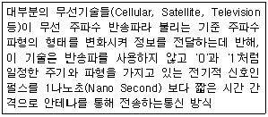
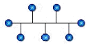
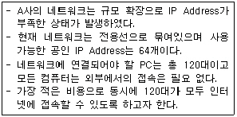
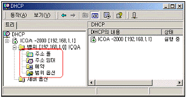

네트워크관리사-2급 (2008-04-27 기출문제)
1과목: TCP/IP
1. IP Address의 설명 중 가장 옳지 않은 것은?
- 같은 네트워크 구획상의 모든 호스트는 똑같은 네트워크 ID를 갖는다.
- 네트워크 구획상의 각 호스트는 같은 호스트 IP Address를 갖는다.
- 네트워크 ID는 '127’ 이 될 수 없다.
- 호스트 ID가 모두 ‘0’ 이 될 수 없다.
(정답률: 61%)

2. TCP/IP에 대한 설명으로 가장 올바른 것은?
- TCP/IP에서 호스트에 대한 이름 해석 서비스는 반드시 DNS로 해야 한다.
- 호스트에 할당되는 IP Address 방식은 네트워크의 규모에 따라 일반적으로 A, B, C 세 개의 Class로 구성 된다.
- C Class를 사용하는 IP Address의 Subnet Mask는 “255.255.255.0” 으로 항상 고정시켜야 한다.
- 인터넷 접속을 위한 기본 프로토콜이지만 좀 더 편리하게 이용하기 위해서는 이외에도 NetBEUI 프로토콜이 추가로 필요하다.
(정답률: 74%)
3. Anonymous FTP에 대한 설명으로 옳지 않은 것은?
- 일반적으로 80번 포트를 사용하여 상호 통신한다.
- Internet의 많은 컴퓨터들이 Anonymous FTP를 사용하여 문서, S/W 등의 정보를 제공한다.
- 상대방 측 컴퓨터의 계정이 없어도 파일을 송수신 할 수 있다.
- "Anonymous" 계정으로 접속한다.
(정답률: 81%)
4. 공인 IP Address와 사설 IP Address를 매핑(Mapping)하는 기술은?
- DHCP
- ARP
- BOOTP
- NAT
(정답률: 75%)
5. 전자우편과 가장 관계가 적은 것은?
- POP
- SMTP
- @, 계정, 호스트
- SNMP
(정답률: 84%)
6. 응용 계층 프로토콜과 그 역할이 잘못 짝지어진 것은?
- Finger - 로그인하고 있는 사용자의 정보 확인
- FTP - 파일 송수신
- Telnet - 원격지 시스템 로그인
- SMTP - 네트워크 관리
(정답률: 88%)
7. 인터넷 메일 호스트 사이에 아스키 형식(ASCII Format) 이외의 텍스트 및 화상이나 음성, 영상 등의 멀티미디어 데이터를 아스키 형식으로 변환할 필요 없이 인터넷 전자우편으로 송신하기 위한 인터넷 표준은?
- SMTP
- MIME
- IMAP
- POP
(정답률: 66%)
8. IPv6에 대한 설명으로 옳지 않은 것은?
- IPv6는 128bit의 길이로 되어 있다.
- 브로드 캐스트를 이용하여 IPv4와 상호 운용이 가능하다.
- IPv6는 유니, 애니, 멀티 캐스트로 나눈다.
- IP Next Generation, 즉 차세대 IP라고도 불리고 있다.
(정답률: 79%)
9. 원격에 있는 호스트 접속 시 암호화된 패스워드를 이용하여 보다 안전하게 접속할 수 있도록 rlogin과 같은 프로토콜을 보완하여 만든 프로토콜은?
- SSH
- SNMP
- SSL
- Telnet
(정답률: 86%)
10. 인터넷을 경유하여 로컬 네트워크에 접근할 때, 보안을 강화하기 위해 사용하는 프로토콜은?
- PPP
- PPTP
- HDLC
- CSLIP
(정답률: 64%)
11. HomePNA 기술에서 데이터 전송에 사용하는 표준 전송 방식은?
- TCP/IP
- CSMA/CD
- HDLC
- VoIP
(정답률: 67%)
12. SNMP에 대한 설명으로 옳지 않은 것은?
- TCP를 이용하여 신뢰성 있는 통신을 한다.
- 네트워크 관리를 위한 표준 프로토콜이다.
- 응용 계층 프로토콜이다.
- RFC 1157에 규정 되어 있다.
(정답률: 65%)
13. LAN의 특징으로 가장 옳지 않은 것은?
- 광대역 전송 매체의 사용으로 고속 통신이 가능하다.
- 라우팅과 같은 경로 선택이 필요하다.
- 하나의 네트워크 회선 자원을 공동으로 이용할 수 있다.
- 네트워크에 연결된 모든 기기와 통신이 가능하다.
(정답률: 50%)
14. 라우팅 프로토콜 중 홉(Hop)의 수에 제한을 받는 것은?
- SNMP
- RIP
- SMB
- OSPF
(정답률: 91%)
15. 최대 전송속도는 4Mbps 이고 전송될 수 있는 가장 긴 데이터 길이는 2,048Byte 이며, 차폐물이 가로막고 있을 경우에는 통신이 불가능한 무선 근거리 통신기술은?
- Bluetooth
- Home RF
- IrDA
- WLAN
(정답률: 50%)
16. 전력선 통신에 대한 설명으로 가장 옳지 않은 것은?
- 전력선 통신은 가정이나 사무실에 이미 구축되어 있는 전력선을 이용하여 데이터를 전송하는 방법이다.
- 전력선 통신은 신호전달을 위해 높은 대역의 주파수를 사용하기 때문에 가전제품에 치명적인 영향을 준다.
- 전력선 통신은 전력선을 통신매체로 사용하기 때문에 동축 케이블이나 광섬유 등을 이용한 통신과 달리 잡음이나 감쇄가 심하다.
- 전력선 통신은 100KHz에서 30MHz 사이의 고주파 대역에 신호를 실어 보내고 고주파 필터를 통해 신호를 구분해 내는 방식이다.
(정답률: 78%)
17. 다음에서 설명하는 통신방식은?

- WLAN
- IrDA
- UWB
- Bluetooth
(정답률: 46%)
2과목: 네트워크 일반
18. OSI 참조모델의 상위층 레벨 프로토콜에 해당되는 것은?
- 표현 계층
- 네트워크 계층
- 데이터 링크 계층
- 물리 계층
(정답률: 89%)
19. 공중 통신 사업자로부터 통신 회선을 임대하여 컴퓨터를 접속시킨 후 이 컴퓨터가 갖고 있는 정보를 여러 사용자에게 재판매하는 통신 서비스 시스템은?
- VAN
- LAN
- INS
- ISDN
(정답률: 72%)
20. LAN의 Topology 중 공통 배선에 시스템의 모든 요소를 연결하는 방식은?

- 스타형
- 버스형
- 링형
- 결선형
(정답률: 90%)
21. 고속 Ethernet의 액세스 방식에 해당되는 것은?
- ALOHA
- CSMA/CD
- Token Bus
- Token Ring
(정답률: 81%)
22. ADSL에 대한 내용으로 잘못된 것은?
- 기존의 전화회선을 이용하여 저렴한 가격으로 고속의 인터넷을 제공한다.
- Asymmetric이란 송수신 속도가 다른 속도를 제공하기 때문에 붙여진 이름이다.
- 전화국과 연결하기 위해 일반 랜 카드가 필요하며, 랜 카드와 전화선을 연결하기 위한 Splitter라는 기기가 필요하다.
- 전화국에서 5Km 내에 있어야 속도가 보장되며, 그 이상 거리가 멀어 질수록 전송 속도가 저하된다.
(정답률: 57%)
23. 프로토콜을 형성하는 기능 중 각 계층의 데이터에 제어 정보를 부착하는 것은?
- 캡슐화
- 다중화
- 세분화
- 동기화
(정답률: 82%)
24. 다음 사례에 적당한 네트워크 확장 방법은?

- 공인된 IP Address를 ISP에 요청하여 라우터 및 클라이언트에 부여한다.
- Router의 NAT 기능을 활용한다.
- DHCP 기능을 사용한다.
- BOOTP 기능을 활용한다.
(정답률: 62%)
25. 불특정 다수의 웹 사용자를 대상으로 글을 게시할 수 있으며 또 다른 사용자의 글을 자유롭게 조회할 수 있는 시스템은?
- BBS
- FTP
- DNS
(정답률: 70%)
26. 광파이버(Optic Fiber)의 굴절률이 전파하는 광의 파장에 의해 변화함으로써 생기는 파형의 퍼짐을 뜻하는 것은?
- 색 분산
- 구조 분산
- 도파로 분산
- 재료 분산
(정답률: 41%)
27. 적외선 방식을 이용한 무선 네트워크 응용으로 가장 옳지 않은 것은?
- 적외선 포트가 설치된 데스크 탑, 노트북, PDA 간 상호통신
- 적외선을 지원하는 주변기기(디지털 카메라, 프린터 등)와 컴퓨터의 상호통신
- 적외선을 지원하는 휴대폰과 휴대폰의 상호통신
- 적외선을 지원하는 휴대폰과 기지국의 상호통신
(정답률: 82%)
3과목: NOS
28. Linux 시스템에 설치된 입출력 장치들과 마운트 될 파일시스템의 마운트 포인터가 위치하는 디렉터리는?
- /dev
- /lib
- /root
- /mnt
(정답률: 71%)
29. Windows 2000 Server에서 DHCP를 사용해 IP Address가 동적으로 할당되도록 하였다. 필요에 의해 특정 클라이언트가 특정 IP Address를 할당 받게 하기 위해서는 아래의 어느 메뉴 항목에서 설정해야 하는가?

- 주소 풀
- 주소 임대
- 예약
- 범위 옵션
(정답률: 49%)
30. Linux의 lilo.conf 설정파일에서 기본적으로 부팅되는 운영체제를 선택하는 옵션은?
- boot
- map
- default
- prompt
(정답률: 52%)
31. Windows 2000 Server에서 그룹 계정을 사용하는 이유는 그룹에 권한을 설정하여 사용자 계정을 포함시키면 관리하기 편리해지기 때문이다. 그룹 계정의 종류에 해당하지 않는 것은?
- Local Group
- Domain Local Group
- Network Group
- Global Group
(정답률: 61%)
32. Windows 2000 Server의 기본 보안으로 옳지 않은 것은?
- 최소 암호 길이의 설정
- 최소 암호 기간의 설정
- 사용자 암호 사용 기간 제한 및 암호의 복잡성 설정
- User 및 Group들의 검색 허용 설정
(정답률: 73%)
33. Windows 2000 Server의 사용자 계정에 대한 설명으로 올바른 것은?
- 새로 생성된 계정으로 로그인 하는 경우에 반드시 암호를 다시 지정해야 한다.
- 모든 암호는 대소문자를 구분하지 않는다.
- 일정 기간이 지나면 암호를 반드시 변경해야 한다.
- 계정을 삭제하지 않고도 사용하지 못하도록 할 수 있다.
(정답률: 60%)
34. Windows 2000 Server가 설치되면서 자동 생성되는 그룹으로 수정이 불가능한 그룹은?
- Local Group
- System Group
- Built-In Group
- Application Group
(정답률: 65%)
35. Windows 2000 Server가 감사할 수 있는 이벤트의 종류를 설명한 것 중 잘못된 것은?
- 정책 변경 : 사용자 보안옵션, 사용자 권한 또는 계정 정책이 변경되는 이벤트
- 시스템 이벤트 : Windows 2000 보안 및 보안 로그에 영향을 주는 이벤트
- 디렉터리 서비스 액세스 : 사용자가 파일, 폴더 또는 프린터에 액세스 하는 이벤트
- 권한 사용 : 시스템 시간 변경과 같은 사용자가 권한을 사용한 이벤트
(정답률: 55%)
36. NetBIOS 이름을 IP Address로 변환해 주는 것은?
- DNS
- WINS
- HOSTS
- ARP
(정답률: 62%)
37. Windows 2000 Server의 디폴트 보안 템플릿에 관한 설명으로 옳지 않은 것은?
- 디폴트 보안 템플릿은 처음부터 시스템을 제공한다.
- 디폴트 보안 설정은 NTFS 파일시스템 볼륨에서만 적용된다.
- Windows 2000 설치 플랫폼(Professional, Server, Domain Controller)에 관계없이 동일하게 적용된다.
- 디폴트 보안 템플릿은 Windows 2000 Server가 설치된 파티션의 “/winnt/inf” 폴더 안에 존재한다.
(정답률: 51%)
38. Windows 2000 Server의 보안 구성 작업 자동화에 관한 설명으로 옳지 않은 것은?
- 명령 프롬프트에서 동적으로 실행된다.
- 여러 컴퓨터에서 보안을 분석하거나 구성하고 컴퓨터를 사용하지 않는 시간에 작업을 수행할 때 유용하다.
- 템플릿이 미리 작성되어 있어야 이용 가능하다.
- Secedit.exe 도구를 이용한다.
(정답률: 56%)
39. Linux의 kill 명령어에 대한 설명이다. 가장 옳지 않은 것은?
- 현재 동작 중인 프로세스를 종료하는 명령이다.
- kill 과 유사한 명령어 killall 은 일반적으로 프로그램 이름으로 종료시킨다.
- “kill -9 프로세스_번호”는 중단되지 않는 프로세스를 강제로 종료시킨다.
- “kill 프로세스_번호”를 사용하면 언제나 원하는 프로세스를 종료시킬 수 있다.
(정답률: 55%)
40. Windows 2000 Server의 “시스템 성능 모니터”의 내용으로 옳지 않은 것은?
- 여러 컴퓨터의 데이터를 동시에 모니터링 할 수 있다.
- 시스템 성능 모니터를 이용하면 네트워크 내에 모든 컴퓨터의 프로세서, 메모리, 캐시, 프로세스, 스레드 등의 작동을 모니터링 할 수 있다.
- 차트, 로그, 경고, 보고서의 내용을 데이터베이스나 혹은 스프레드시트로 가져갈 수 있다.
- 시스템의 정확한 작동 정보를 위한 베이스 라인을 설정은 다수의 사용자가 시스템을 이용할 때 설정한다.
(정답률: 51%)
41. Windows 2000 Server에서 원격으로 서버에 접속하여 GUI 환경으로 관리자 기능을 사용할 수 있는 서비스는?
- X 윈도우 서비스
- WINS 서비스
- NNTP 서비스
- 터미널 서비스
(정답률: 60%)
42. 보조 DNS(Domain Name System)에 대한 설명으로 가장 옳지 않은 것은?
- 도메인 데이터베이스 수정은 보조 DNS 서버와 주 DNS서버 동시에 이루어진다.
- 결함 허용을 위해 보조 DNS 서버를 이용한다.
- 여러 대의 보조 DNS 서버를 둘 수 있다.
- 주 DNS 서버가 다운되면 보조 DNS 서버 중 하나를 주 DNS 서버로 승격시킬 수 있다.
(정답률: 56%)
43. Windows 2000 Server에서 구성된 FTP 사이트를 변경할 때 [FTP 사이트] 탭과 관련 없는 것은?
- IP 주소 및 포트
- 연결 수 제한
- 로깅 사용
- 익명 연결 허용
(정답률: 42%)
44. Windows 2000 Server의 이벤트 뷰어에서 제공되는 이벤트 유형에 관한 설명으로 옳지 않은 것은?
- 오류 : 데이터 손실이나 기능 상실 같은 중대한 문제를 기록한다.
- 정보 : 서비스 수행에서 필요한 데이터 정보를 기록한다.
- 경고 : 앞으로 발생할 수 있는 문제를 미리 알려주는 이벤트이다.
- 성공 감사 : 감사된 보안 이벤트가 성공했음을 나타낸다.
(정답률: 45%)
45. Windows 2000 Server에서 IIS(Internet Information Server) 5.0을 사용하여 구축하는 서버로 옳지 않은 것은?
- HTTP 서버
- Terminal 서버
- FTP 서버
- NNTP 서버
(정답률: 62%)
4과목: 네트워크 운용기기
46. 광섬유에서 광의 입사각 조건을 표시하는 것은?
- 코어(CORE)
- 클래드(CLAD)
- 모드수(MODE)
- 개구수(NA)
(정답률: 58%)
47. 버스형 또는 데이지 체인형 네트워크의 종단에 부착하는 장치로 신호를 흡수함으로써 다시 반향되지 않도록 하는 장비는?
- Repeater
- Switch
- Bridge
- Terminator
(정답률: 76%)
48. 두 개의 완전한 다른 네트워크 사이의 데이터 형식(Format)이나 프로토콜을 변환하는 장치로서 OSI 모델의 모든 계층을 포함하여 동작하는 장비는?
- Bridge
- Router
- Gateway
- Repeater
(정답률: 76%)
49. 무선 랜의 구성 방식 중 무선랜 카드를 가진 컴퓨터 간의 네트워크를 구성하여 작동하는 방식은?
- Infrastructure
- Ad Hoc
- Bridge
- CSMA/CD
(정답률: 58%)
50. A-빌딩에 무선 네트워크가 구축되어 있고, 근접한 B-빌딩 역시 무선 네트워크가 구성되어 있을 때, 두 빌딩간 무선 네트워크를 연결하기 위해서 사용되는 장비로 가장 올바른 것은?
- 액세스 포인트
- 무선 랜카드
- 위성 안테나
- 무선 브리지
(정답률: 59%)